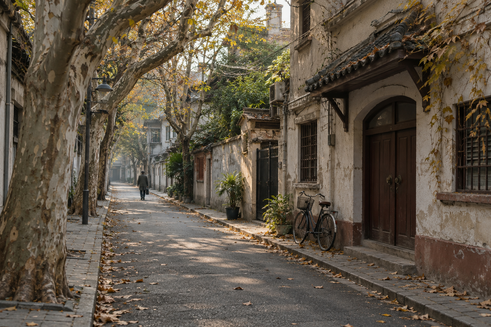
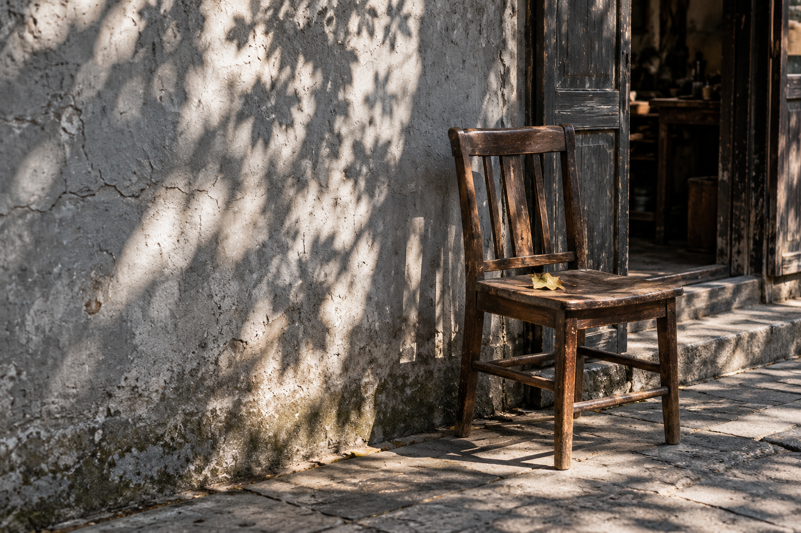

把日子，
过回自己的节奏
重返一条熟悉的街，
重新学习，怎样不着急地生活。

慢下来，
才看得见
沿街的梧桐还在，修鞋的小店也还在。门口摆着一把旧椅子，阳光从树叶的缝隙落下来，正好停在椅背上。
以前经过这里，我总是低着头看手机。导航告诉我还剩几分钟，消息提醒我下一件事。我知道自己要去哪里，却很少知道自己正经过什么。
那天没有着急回的消息。我在门边停下来，听老板讲起这条街的变化。
他说起一间关掉的书店，说起搬走的邻居，又说今年秋天来得晚。那些事情都不大，却让一条只用来经过的街，重新有了人的轮廓。

还给眼前。一把椅子，一小片
不需要赶走的时间。
我坐了一会儿。没有拍照，也没有想把这个下午整理成什么。我只是看着光，一点一点从椅背移到地面。
原来，慢一点并不会错过什么。有些事情，反而只有慢下来才能遇见。
给生活，
留一点空白
我们习惯了把一天填满。等车的三分钟要回消息，走路的十分钟要听点什么，周末也最好有一个像样的安排。
仿佛空下来，就意味着少做了什么。
可很多真正记得住的时刻，并不是计划表上的一格。是一次没有赶时间的散步，是与朋友多聊的十分钟，是把一顿饭认真吃完。
写给总在赶路的我们留一点没有安排的时间，
让生活自己走进来。
小时候觉得一天很长，放学后还能在楼下玩很久。现在的时间并没有变短，我们却常常把它切得太碎，碎到来不及感受，就已经过去了。
也许不必把每一次停留，都兑换成收获。坐在窗边看一会儿天色，或者沿着熟悉的路绕远一点，本身就已经是一件完整的事。
生活的尺度，有时可以很小。
那些看起来什么也没有发生的片刻，慢慢让人重新听见自己的声音。
找回自己的步幅
回去的路上，我关掉了导航。
这是一条走过很多次的路，我当然知道怎么回家。只是很久以来，我都习惯了让一个声音告诉我：再快一点，前面还有下一件事。
这次，我想按自己的步幅走。
不必急着改变全部生活。就从今天开始，给自己留下一小段空白。把手机放进口袋，看看街边新开的店，或者认真听完一个人说的话。
我们仍然会有忙碌的日子，也仍然要奔赴很多地方。但至少可以偶尔提醒自己，生活也在路上，不只在抵达之后。
只是走走。